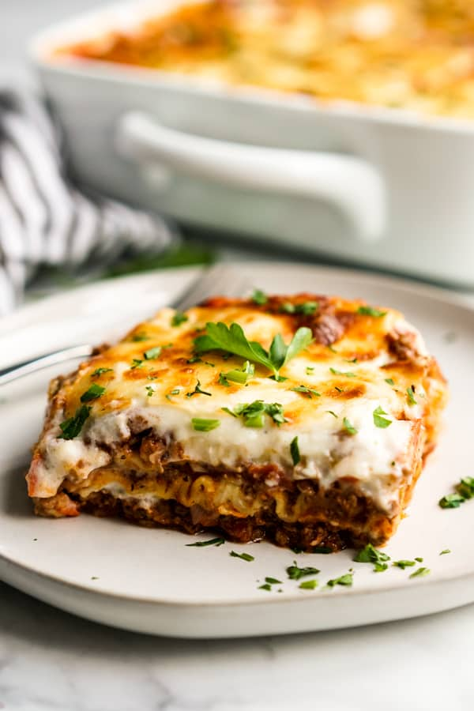

Home
Lasagna

About the Dish
Meet the lasagna that whispers instead of shouts. In this Lasagna Béchamel, paper-thin pasta is tucked between a savory, tomato-bright ragù and clouds of velvety béchamel scented with nutmeg.
As it bakes, the layers relax into one another, the edges turn delicately crisp, and a bronzed blanket of Parmigiano emerges on top.
It’s rich without being heavy, elegant without being fussy—the kind of comfort food you serve with a simple green salad, a glass of red, and a satisfied silence at the table.
Each bite tells a tale of time and tradition—the béchamel gently blankets the meat like snowfall over a rustic hillside, tempering the richness of the ragù with its creamy grace.
The pasta sheets, barely thicker than parchment, hold everything together like pages in a handwritten recipe passed down generations. When you cut into it, steam escapes like a sigh of relief, revealing layers that didn’t just cook—they became something new entirely.
It’s the kind of dish that makes a Sunday feel sacred.
Ingredients
Ragu Sauce
- 2 tbsp olive oil
- 1 small yellow onion, finely chopped
- 1 medium carrot, peeled amd finely diced
- 1 celery stalk, finely diced
- 2-3 cloves garlic, minced
- 1 lb (450g) ground beef
- Salt and finely ground pepper, to taste
- 2 tbsp tomato paste
- 1 cup whole milk
- 1/2 cup dry white wine or red wine
- 1 (28 oz) can crushed tomatoes or passata
- 1/2 tsp dried oregano or Italian herbs
- A pinch of sugar
- Fresh basil
Bechamel Sauce
- 4 tbsp (1/4 cup) unsalted butter
- 1/4 cup all-purpose flour
- 3 cups whole milk, warm
- Salt, to taste
- Freshly ground white or black pepper
- A small pinch of ground nutmeg
For Assembly
- 9-12 lasagna sheets
- 1.5 cups grated Parmigiano-Reggiano
- Shredded Mozzarella for the top
- Olive oil or butter
Cooking Steps
- Make the Ragù (Meat Sauce)
- In a large pan, heat olive oil over medium heat.
- Add chopped onion, carrot, and celery. Cook until soft (about 5–7 minutes).
- Stir in garlic and cook for 30 seconds.
- Add ground meat. Cook until browned, breaking it up with your spoon.
- Season with salt and pepper.
- Stir in tomato paste and cook for a minute to deepen the flavor.
- Add wine. Let it simmer until it mostly evaporates (2–3 mins).
- Add crushed tomatoes and a splash of milk (if using). Simmer uncovered for 25–30 minutes, stirring occasionally. Taste and adjust seasoning.
- Make the Béchamel Sauce
- In a medium saucepan, melt butter over medium heat.
- Whisk in flour. Cook while stirring for 1–2 minutes (don’t let it brown).
- Slowly add warm milk, a bit at a time, whisking constantly to prevent lumps.
- Cook until it thickens to a creamy sauce (about 5–7 minutes).
- Season with salt, pepper, and a pinch of nutmeg.
- Preheat the Oven
- Set your oven to 375°F (190°C)
- Assemble the Lasagna
In a greased 9x13 baking dish:
- Spread a small layer of béchamel at the bottom.
- Add a layer of pasta sheets.
- Spoon over some ragù, then some béchamel, then a sprinkle of Parmesan.
- Repeat layers (pasta → ragù → béchamel → cheese) until you’re near the top.
- Finish with béchamel and a good layer of Parmesan (add mozzarella if you’re into it).
- Bake It
- Cover with foil and bake for 25 minutes
- Remove foil and bake uncovered for another 15–20 minutes until golden and bubbly.
- Let it rest for 10–15 minutes before cutting. (Trust—it sets up beautifully.)